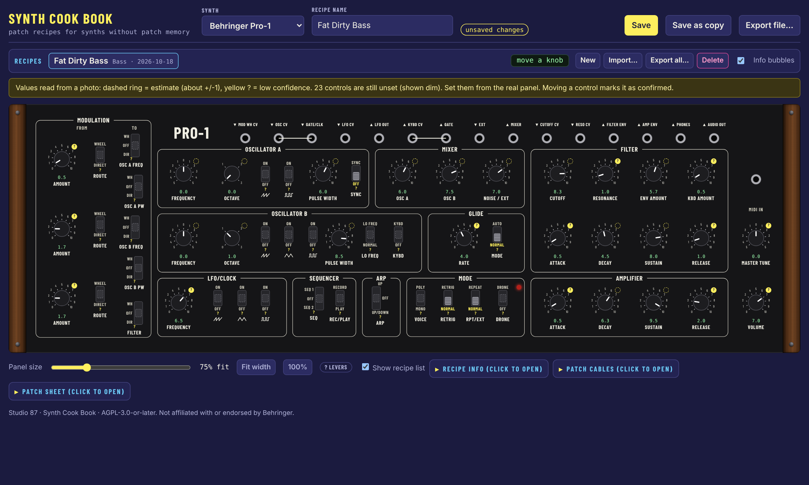

Synth Cook Book
Patch recipes for synths without patch memory: Behringer Pro-1, CAT, TD-3-MO, TD-3, MODEL D and POLY D; Moog Mother-32, DFAM, Subharmonicon, Grandmother and Minimoog Model D; Arturia MicroBrute; Korg volca bass and volca keys. Free and open source (AGPL-3.0-or-later).

Screenshot of the recipe book page (docs/recipe-book.html) in a browser.
Status
Usable
The recipe book draws the four front panels and stores your recipes in the browser. No plugin build yet.
The recipe book draws the four front panels and stores your recipes in the browser. No plugin build yet.
Values from photos
Some knob values were read from a photo: a dashed ring is an estimate (about plus or minus 1), a yellow ? is low confidence. Moving a control marks it as confirmed.
Some knob values were read from a photo: a dashed ring is an estimate (about plus or minus 1), a yellow ? is low confidence. Moving a control marks it as confirmed.
Network
The page links Google Fonts for its typeface, its only network request. Offline, a fallback font is used and everything else works.
The page links Google Fonts for its typeface, its only network request. Offline, a fallback font is used and everything else works.
Open
- Recipe book (the app shown above)
- Pro-1 patch book (the older page for browsing and sharing patches)
- Releases: zip with the offline file and a PDF manual that includes an interface tour
- Source
Not affiliated with or endorsed by Behringer, Moog Music, Arturia or Korg.